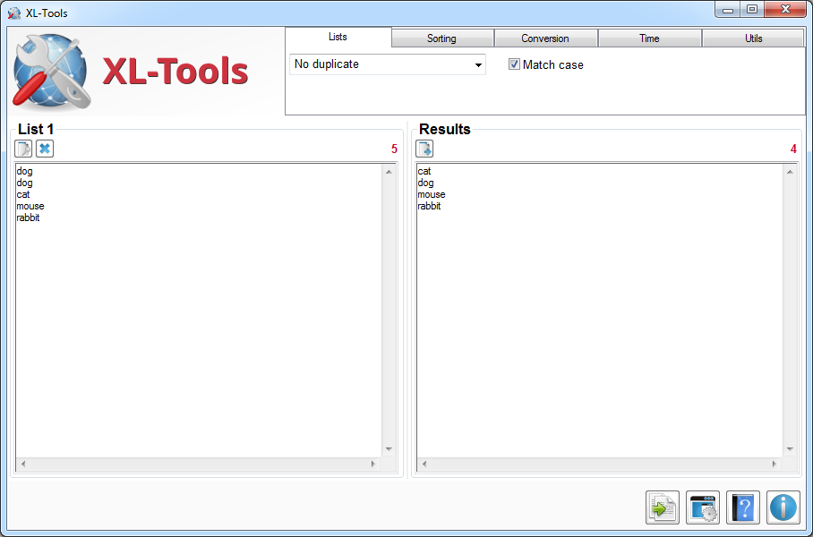

|
XL-Tools
Copyright (c) 2015-2016 Alain Rioux
|
| See Credits about the logo |
XL-Tools provides a bunch of functions for list of strings, grouped in five
categories:
| Category |
Functions |
| Lists |
No duplicate, Only duplicates, Count items, Count characters,
L1-L2, Column to row, Row to column, List to regex, Concat, Split
strings, Split and extract, Merge lines, Replace, Reverse string,
Lowercase, Uppercase, Add line number |
| Sorting |
Alphabetical order, Numerical order, String length, IPv4 Address,
Date and time |
| Conversion |
Hex to ASCII, ASCII to Hex, Hex to Base10, Base10 to ASCII, URI
Decode, URI Encode, HTML Decode, HTML Encode, Base64 to ASCII,
ASCII to Base64, SHA1 - Base32 to Base16 |
| Time |
Anytime to Anytime, Unixtime to Anytime, ChromeTime to Anytime,
LDAPTime to Anytime, Anytime to Unixtime, Date to Weekday, Time
difference, Add time, Substract time |
| Utils |
NSLookup, CIDR to IP Range, IP to Arpa, Arpa to IP, Resolve MAC
Address, Resolve IPv4 GeoIP, Resolve IPv4 ISP, Resolve User-agent,
Credit Card to issuing company, Custom functions |
See documentation for more details.

XL-Tools doesn't require any installation. In order to start using it, just
run the executable file.
| Version |
Comments |
| 1.2 |
- Added: Eval option in function Replace-By [List], see documentation
- Added: Regex validation in function Replace-By [List]
- Fixed: Stop button didn't work
- Fixed: Auto-update of the tools didn't work sometimes
|
| 1.1 |
- Fixed: unixtime with more than 10 digits freezed the tool
|
| 1.0 |
First release. |
To translate XL-Tools to other languages:
- In Config Window, use the Export Lang.ini
function. The file will be saved in the same directory of the tool;
- Open the file in any text editor like Notepad;
- Translate each expression at the right of the = symbol;
- The expression on the left side is used by the tool to identify the expression
so do not change it. Also, be sure to have a space between the = symbol
and your expression (ex. Key = Value);
- Authorized characters are alphanumerics, spaces and these symbols: ",", ".", "-",
"!", ",", "(" and ")". Any other character will be deleted;
- For some controls, string length must be the same as original. A longer string could
be truncated if it doesn't match the length of the field;
- The value associated with the translatorName will be used in
the About window to identify you as translator (if you want). You can
also add your email or a short url (ex. YourName (youraddress@email.com));
- Restart the tool so the strings in Lang.ini will be used
instead of the default language.
If you translate the tool and you want to share, contact the author.
Available translations:
To install, save the appropriate Lang.ini file in the same
directory of the tool.
No translation available for the moment.
Copyright (C) 2015-2016 Alain Rioux
This program is free software: you can redistribute it and/or modify
it under the terms of the GNU General Public License as published by
the Free Software Foundation, either version 3 of the License, or
(at your option) any later version.
This program is distributed in the hope that it will be useful,
but WITHOUT ANY WARRANTY; without even the implied warranty of
MERCHANTABILITY or FITNESS FOR A PARTICULAR PURPOSE. See the
GNU General Public License for more details.
You should have received a copy of the GNU General Public License
along with this program. If not, see http://www.gnu.org/licenses/.
If you have any problem, suggestion, comment, or you found a bug in my
utility, you can send a message at http://le-tools.com/about.php.
- For database:
- For icons:
- The main logo of XL-Tools has been created by Saki (Alexandre Moore)
and is distributed on term of the GNU General Public License.
- The icon used for Process button comes from Danish Royalty Free Icons by
Jonas Rask Design.
This icon is distributed as Freeware.
- Documentation and Cancel (in Utils - Custom Functions) button icons has
been created by Oxygen Team
on term of the GNU Lesser General Public License.
- A lot of icons used for buttons come from the Blue Bits collection of
Icojam (licensed as
"Public Domain") like config, about, open file, delete, check update, import
database, etc.
- Stop icon has been created by emey87 (Manuel Lopez) and is distributed on term of the
CC Attribution-No Derivative 4.0 license.
- Icons for buttons in Utils - Custom Functions come from Farm Fresh Icons by
Fatcow Web Hosting
and are distributed on term of the CC Attribution 4.0 license.
- The check icon used in Configuration Wizard has been created by
Cheezen (Anders Bjarnle)
and is distributed as freeware.
XL-Tools
Copyright
(c) 2015-2016 Alain Rioux